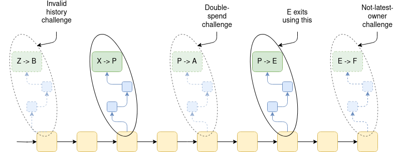
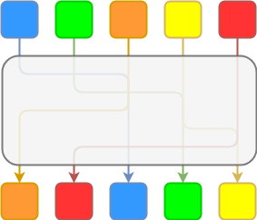
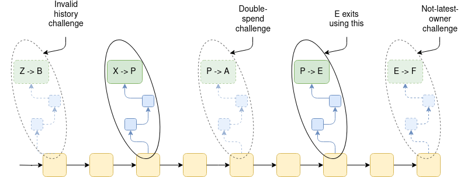
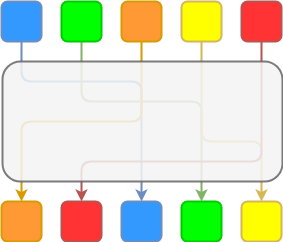

Exit games for EVM validiums: the return of Plasma
2023 Nov 14
See all posts
Exit games for EVM validiums: the return of Plasma
Special thanks to Karl Floersch, Georgios Konstantopoulos and Martin Koppelmann for feedback, review and discussion.
Plasma is a class of blockchain scaling solutions that allow all data and computation, except for deposits, withdrawals and Merkle roots, to be kept off-chain. This opens the door to very large scalability gains that are not bottlenecked by on-chain data availability. Plasma was first invented in 2017, and saw many iterations in 2018, most notably Minimal Viable Plasma, Plasma Cash, Plasma Cashflow and Plasma Prime. Unfortunately, Plasma has since largely been superseded by rollups, for reasons primarily having to do with (i) large client-side data storage costs, and (ii) fundamental limitations of Plasma that make it hard to generalize beyond payments.
The advent of validity proofs (aka ZK-SNARKs) gives us a reason to rethink this decision. The largest challenge of making Plasma work for payments, client-side data storage, can be efficiently addressed with validity proofs. Additionally, validity proofs provide a wide array of tools that allow us to make a Plasma-like chain that runs an EVM. The Plasma security guarantees would not cover all users, as the fundamental reasons behind the impossibility of extending Plasma-style exit games to many kinds of complex applications still remain. However, a very large percentage of assets could nevertheless be kept secure in practice.
This post describes how Plasma ideas can be extended to do such a thing.
Overview: how Plasma works
The simplest version of Plasma to understand is Plasma Cash. Plasma Cash works by treating each individual coin as a separate NFT, and tracking a separate history for each coin. A Plasma chain has an operator, who is responsible for making and regularly publishing blocks. The transactions in each block are stored as a sparse Merkle tree: if a transaction transfers ownership of coin k, it appears in position k of the tree. When the Plasma chain operator creates a new block, they publish the root of the Merkle tree to chain, and they directly send to each user the Merkle branches corresponding to the coins that that user owns.

Suppose that these are the last three transaction trees in a Plasma Cash chain. Then, assuming all previous trees are valid, we know that Eve currently owns coin 1, David owns coin 4 and George owns coin 6.
The main risk in any Plasma system is the operator misbehaving. This can happen in two ways:
- Publishing an invalid block (eg. the operator includes a transaction sending coin 1 from Fred to Hermione even if Fred doesn't own the coin at that time)
- Publishing an unavailable block (eg. the operator does not send Bob his Merkle branch for one of the blocks, preventing him from ever proving to someone else that his coin is still valid and unspent)
If the operator misbehaves in a way that is relevant to a user's assets, the user has the responsibility to exit immediately (specifically, within 7 days). When a user ("the exiter") exits, they provide a Merkle branch proving the inclusion of the transaction that transferred that coin from the previous owner to them. This starts a 7-day challenge period, during which others can challenge that exit by providing a Merkle proof of one of three things:
- Not latest owner: a later transaction signed by the exiter transferring the exiter's coin to someone else
- Double spend: a transaction that transferred the coin from the previous owner to someone else, that was included before the transaction transferring the coin to the exiter
- Invalid history: a transaction that transferred the coins before (within the past 7 days) that does not have a corresponding spend. The exiter can respond by providing the corresponding spend; if they do not, the exit fails.

With these rules, anyone who owns coin k needs to see all of the Merkle branches of position k in all historical trees for the past week to be sure that they actually own coin k and can exit it. They need to store all the branches containing transfers of the asset, so that they can respond to challenges and safely exit with their coin.
Generalizing to fungible tokens
The above design works for NFTs. However, much more common than NFTs are fungible tokens, like ETH and USDC. One way to apply Plasma Cash to fungible tokens is to simply make each small denomination of a coin (eg. 0.01 ETH) a separate NFT. Unfortunately, the gas costs of exiting would be too high if we do this.
One solution is to optimize by treating many adjacent coins as a single unit, which can be transferred or exited all at once. There are two ways to do this:
- Use Plasma Cash almost as-is, but use fancy algorithms to compute the Merkle tree of a really large number of objects very quickly if many adjacent objects are the same. This is surprisingly not that hard to do; you can see a python implementation here.
- Use Plasma Cashflow, which simply represents many adjacent coins as a single object.
However, both of these approaches run into the problem of fragmentation: if you receive 0.001 ETH each from hundreds of people who are buying coffees from you, you are going to have 0.001 ETH in many places in the tree, and so actually exiting that ETH would still require submitting many separate exits, making the gas fees prohibitive. Defragmentation protocols have been developed, but are tricky to implement.
Alternatively, we can redesign the system to take into account a more traditional "unspent transaction output" (UTXO) model. When you exit a coin, you would need to provide the last week of history of those coins, and anyone could challenge your exit by proving that those historical coins were already exited.

A withdrawal of the 0.2 ETH UTXO at the bottom right could be cancelled by showing a withdrawal of any of the UTXOs in its history, shown in green. Particularly note that the middle-left and bottom-left UTXOs are ancestors, but the top-left UTXO is not. This approach is similar to order-based coloring ideas from colored coins protocols circa 2013.
There is a wide variety of techniques for doing this. In all cases, the goal is to track some conception of what is "the same coin" at different points in history, in order to prevent "the same coin" from being withdrawn twice.
Challenges with generalizing to EVM
Unfortunately, generalizing beyond payments to the EVM is much harder. One key challenge is that many state objects in the EVM do not have a clear "owner". Plasma's security depends on each object having an owner, who has the responsibility to watch and make sure the chain's data is available, and exit that object if anything goes wrong. Many Ethereum applications, however, do not work this way. Uniswap liquidity pools, for example, do not have a single owner.
Another challenge is that the EVM does not attempt to limit dependencies. ETH held in account A at block N could have come from anywhere in block N-1. In order to exit a consistent state, an EVM Plasma chain would need to have an exit game where, in the extreme case, someone wishing to exit using information from block N might need to pay the fees to publish the entire block N state on chain: a gas cost in the many millions of dollars. UTXO-based Plasma schemes do not have this problem: each user can exit their assets from whichever block is the most recent block that they have the data for.
A third challenge is that the unbounded dependencies in the EVM make it much harder to have aligned incentives to prove validity. The validity of any state depends on everything else, and so proving any one thing requires proving everything. Sorting out failures in such a situation generally cannot be made incentive-compatible due to the data availability problem. A particularly annoying problem is that we lose the guarantee, present in UTXO-based systems, that an object's state cannot change without its owner's consent. This guarantee is incredibly useful, as it means that the owner is always aware of the latest provable state of their assets, and simplifies exit games. Without it, creating exit games becomes much harder.
How validity proofs can alleviate many of these problems
The most basic thing that validity proofs can do to improve Plasma chain designs is to prove the validity of each Plasma block on chain. This greatly simplifies the design space: it means that the only attack from the operator that we have to worry about is unavailable blocks, and not invalid blocks. In Plasma Cash, for example, it removes the need to worry about history challenges. This reduces the state that a user needs to download, from one branch per block in the last week, to one branch per asset.
Additionally, withdrawals from the most recent state (in the common case where the operator is honest, all withdrawals would be from the most recent state) are not subject to not-latest-owner challenges, and so in a validity-proven Plasma chain such withdrawals would not be subject to any challenges at all. This means that, in the normal case, withdrawals can be instant!
Extending to the EVM: parallel UTXO graphs
In the EVM case, validity proofs also let us do something clever: they can be used to implement a parallel UTXO graph for ETH and ERC20 tokens, and SNARK-prove equivalence between the UTXO graph and the EVM state. Once you have that, you could implement a "regular" Plasma system over the UTXO graph.

This lets us sidestep many of the complexities of the EVM. For example, the fact that in an account-based system someone can edit your account without your consent (by sending it coins and thereby increasing its balance) does not matter, because the Plasma construction is not over the EVM state itself, but rather over a UTXO state that lives in parallel to the EVM, where any coins that you receive would be separate objects.
Extending to the EVM: total state exiting
There have been simpler schemes proposed to make a "plasma EVM", eg. Plasma Free and before that this post from 2019. In these schemes, anyone can send a message on the L1 to force the operator to either include a transaction or make a particular branch of the state available. If the operator fails to do this, the chain starts reverting blocks. The chain stops reverting once someone posts a full copy of either the whole state, or at least all of the data that users have flagged as being potentially missing. Making a withdrawal can require posting a bounty, which would pay for that user's share of the gas costs of someone posting such a large amount of data.
Schemes like this have the weakness that they do not allow instant withdrawals in the normal case, because there is always the possibility that the chain will need to revert the latest state.
Limits of EVM plasma schemes
Schemes like this are powerful, but are NOT able to provide full security guarantees to all users. The case where they break down most clearly is situations where a particular state object does not have a clear economic "owner".
Let us consider the case of a CDP (collateralized debt position), a smart contract where a user has coins that are locked up and can only be released once the user pays their debt. Suppose that user has 1 ETH (~$2000 as of the time of this writing) locked up in a CDP with 1000 DAI of debt. Now, the Plasma chain stops publishing blocks, and the user refuses to exit. The user could simply never exit. Now, the user has a free option: if the price of ETH drops below $1000, they walk away and forget about the CDP, and if the price of ETH stays above, eventually they claim it. On average, such a malicious user earns money from doing this.
Another example is a privacy system, eg. Tornado Cash or Privacy Pools. Consider a privacy system with five depositors:

The ZK-SNARKs in the privacy system keep the link between the owner of a coin coming into the system and the owner of the coin coming out hidden.
Suppose that only orange has withdrawn, and at that point the Plasma chain operator stops publishing data. Suppose also that we use the UTXO graph approach with a first-in-first-out rule, so each coin gets matched to the coin right below it. Then, orange could withdraw their pre-mixed and post-mixed coin, and the system would perceive it as two separate coins. If blue tries to withdraw their pre-mixed coin, orange's more recent state would supersede it; meanwhile, blue would not have the information to withdraw their post-mixed coin.
This can be fixed if you allow the other four depositors to withdraw the privacy contract itself (which would supersede the deposits), and then take the coins out on L1. However, actually implementing such a mechanism requires additional effort on the part of people developing the privacy system.
There are also other ways to solve privacy, eg. the Intmax approach, which involves putting a few bytes on chain rollup-style together with a Plasma-like operator that passes around information between individual users.
Uniswap LP positions have a similar problem: if you traded USDC for ETH in a Uniswap position, you could try to withdraw your pre-trade USDC and your post-trade ETH. If you collude with the Plasma chain operator, the liquidity providers and other users would not have access to the post-trade state, so they would not be able to withdraw their post-trade USDC. Special logic would be required to prevent situations like this.
Conclusions
In 2023, Plasma is an underrated design space. Rollups remain the gold standard, and have security properties that cannot be matched. This is particularly true from the developer experience perspective: nothing can match the simplicity of an application developer not even having to think about ownership graphs and incentive flows within their application.
However, Plasma lets us completely sidestep the data availability question, greatly reducing transaction fees. Plasma can be a significant security upgrade for chains that would otherwise be validiums. The fact that ZK-EVMs are finally coming to fruition this year makes it an excellent opportunity to re-explore this design space, and come up with even more effective constructions to simplify the developer experience and protect users' funds.
Exit games for EVM validiums: the return of Plasma
2023 Nov 14 See all postsSpecial thanks to Karl Floersch, Georgios Konstantopoulos and Martin Koppelmann for feedback, review and discussion.
Plasma is a class of blockchain scaling solutions that allow all data and computation, except for deposits, withdrawals and Merkle roots, to be kept off-chain. This opens the door to very large scalability gains that are not bottlenecked by on-chain data availability. Plasma was first invented in 2017, and saw many iterations in 2018, most notably Minimal Viable Plasma, Plasma Cash, Plasma Cashflow and Plasma Prime. Unfortunately, Plasma has since largely been superseded by rollups, for reasons primarily having to do with (i) large client-side data storage costs, and (ii) fundamental limitations of Plasma that make it hard to generalize beyond payments.
The advent of validity proofs (aka ZK-SNARKs) gives us a reason to rethink this decision. The largest challenge of making Plasma work for payments, client-side data storage, can be efficiently addressed with validity proofs. Additionally, validity proofs provide a wide array of tools that allow us to make a Plasma-like chain that runs an EVM. The Plasma security guarantees would not cover all users, as the fundamental reasons behind the impossibility of extending Plasma-style exit games to many kinds of complex applications still remain. However, a very large percentage of assets could nevertheless be kept secure in practice.
This post describes how Plasma ideas can be extended to do such a thing.
Overview: how Plasma works
The simplest version of Plasma to understand is Plasma Cash. Plasma Cash works by treating each individual coin as a separate NFT, and tracking a separate history for each coin. A Plasma chain has an operator, who is responsible for making and regularly publishing blocks. The transactions in each block are stored as a sparse Merkle tree: if a transaction transfers ownership of coin
k, it appears in positionkof the tree. When the Plasma chain operator creates a new block, they publish the root of the Merkle tree to chain, and they directly send to each user the Merkle branches corresponding to the coins that that user owns.Suppose that these are the last three transaction trees in a Plasma Cash chain. Then, assuming all previous trees are valid, we know that Eve currently owns coin 1, David owns coin 4 and George owns coin 6.
The main risk in any Plasma system is the operator misbehaving. This can happen in two ways:
If the operator misbehaves in a way that is relevant to a user's assets, the user has the responsibility to exit immediately (specifically, within 7 days). When a user ("the exiter") exits, they provide a Merkle branch proving the inclusion of the transaction that transferred that coin from the previous owner to them. This starts a 7-day challenge period, during which others can challenge that exit by providing a Merkle proof of one of three things:

With these rules, anyone who owns coin
kneeds to see all of the Merkle branches of positionkin all historical trees for the past week to be sure that they actually own coinkand can exit it. They need to store all the branches containing transfers of the asset, so that they can respond to challenges and safely exit with their coin.Generalizing to fungible tokens
The above design works for NFTs. However, much more common than NFTs are fungible tokens, like ETH and USDC. One way to apply Plasma Cash to fungible tokens is to simply make each small denomination of a coin (eg. 0.01 ETH) a separate NFT. Unfortunately, the gas costs of exiting would be too high if we do this.
One solution is to optimize by treating many adjacent coins as a single unit, which can be transferred or exited all at once. There are two ways to do this:
However, both of these approaches run into the problem of fragmentation: if you receive 0.001 ETH each from hundreds of people who are buying coffees from you, you are going to have 0.001 ETH in many places in the tree, and so actually exiting that ETH would still require submitting many separate exits, making the gas fees prohibitive. Defragmentation protocols have been developed, but are tricky to implement.
Alternatively, we can redesign the system to take into account a more traditional "unspent transaction output" (UTXO) model. When you exit a coin, you would need to provide the last week of history of those coins, and anyone could challenge your exit by proving that those historical coins were already exited.
A withdrawal of the 0.2 ETH UTXO at the bottom right could be cancelled by showing a withdrawal of any of the UTXOs in its history, shown in green. Particularly note that the middle-left and bottom-left UTXOs are ancestors, but the top-left UTXO is not. This approach is similar to order-based coloring ideas from colored coins protocols circa 2013.
There is a wide variety of techniques for doing this. In all cases, the goal is to track some conception of what is "the same coin" at different points in history, in order to prevent "the same coin" from being withdrawn twice.
Challenges with generalizing to EVM
Unfortunately, generalizing beyond payments to the EVM is much harder. One key challenge is that many state objects in the EVM do not have a clear "owner". Plasma's security depends on each object having an owner, who has the responsibility to watch and make sure the chain's data is available, and exit that object if anything goes wrong. Many Ethereum applications, however, do not work this way. Uniswap liquidity pools, for example, do not have a single owner.
Another challenge is that the EVM does not attempt to limit dependencies. ETH held in account A at block N could have come from anywhere in block N-1. In order to exit a consistent state, an EVM Plasma chain would need to have an exit game where, in the extreme case, someone wishing to exit using information from block N might need to pay the fees to publish the entire block N state on chain: a gas cost in the many millions of dollars. UTXO-based Plasma schemes do not have this problem: each user can exit their assets from whichever block is the most recent block that they have the data for.
A third challenge is that the unbounded dependencies in the EVM make it much harder to have aligned incentives to prove validity. The validity of any state depends on everything else, and so proving any one thing requires proving everything. Sorting out failures in such a situation generally cannot be made incentive-compatible due to the data availability problem. A particularly annoying problem is that we lose the guarantee, present in UTXO-based systems, that an object's state cannot change without its owner's consent. This guarantee is incredibly useful, as it means that the owner is always aware of the latest provable state of their assets, and simplifies exit games. Without it, creating exit games becomes much harder.
How validity proofs can alleviate many of these problems
The most basic thing that validity proofs can do to improve Plasma chain designs is to prove the validity of each Plasma block on chain. This greatly simplifies the design space: it means that the only attack from the operator that we have to worry about is unavailable blocks, and not invalid blocks. In Plasma Cash, for example, it removes the need to worry about history challenges. This reduces the state that a user needs to download, from one branch per block in the last week, to one branch per asset.
Additionally, withdrawals from the most recent state (in the common case where the operator is honest, all withdrawals would be from the most recent state) are not subject to not-latest-owner challenges, and so in a validity-proven Plasma chain such withdrawals would not be subject to any challenges at all. This means that, in the normal case, withdrawals can be instant!
Extending to the EVM: parallel UTXO graphs
In the EVM case, validity proofs also let us do something clever: they can be used to implement a parallel UTXO graph for ETH and ERC20 tokens, and SNARK-prove equivalence between the UTXO graph and the EVM state. Once you have that, you could implement a "regular" Plasma system over the UTXO graph.
This lets us sidestep many of the complexities of the EVM. For example, the fact that in an account-based system someone can edit your account without your consent (by sending it coins and thereby increasing its balance) does not matter, because the Plasma construction is not over the EVM state itself, but rather over a UTXO state that lives in parallel to the EVM, where any coins that you receive would be separate objects.
Extending to the EVM: total state exiting
There have been simpler schemes proposed to make a "plasma EVM", eg. Plasma Free and before that this post from 2019. In these schemes, anyone can send a message on the L1 to force the operator to either include a transaction or make a particular branch of the state available. If the operator fails to do this, the chain starts reverting blocks. The chain stops reverting once someone posts a full copy of either the whole state, or at least all of the data that users have flagged as being potentially missing. Making a withdrawal can require posting a bounty, which would pay for that user's share of the gas costs of someone posting such a large amount of data.
Schemes like this have the weakness that they do not allow instant withdrawals in the normal case, because there is always the possibility that the chain will need to revert the latest state.
Limits of EVM plasma schemes
Schemes like this are powerful, but are NOT able to provide full security guarantees to all users. The case where they break down most clearly is situations where a particular state object does not have a clear economic "owner".
Let us consider the case of a CDP (collateralized debt position), a smart contract where a user has coins that are locked up and can only be released once the user pays their debt. Suppose that user has 1 ETH (~$2000 as of the time of this writing) locked up in a CDP with 1000 DAI of debt. Now, the Plasma chain stops publishing blocks, and the user refuses to exit. The user could simply never exit. Now, the user has a free option: if the price of ETH drops below $1000, they walk away and forget about the CDP, and if the price of ETH stays above, eventually they claim it. On average, such a malicious user earns money from doing this.
Another example is a privacy system, eg. Tornado Cash or Privacy Pools. Consider a privacy system with five depositors:

The ZK-SNARKs in the privacy system keep the link between the owner of a coin coming into the system and the owner of the coin coming out hidden.
Suppose that only orange has withdrawn, and at that point the Plasma chain operator stops publishing data. Suppose also that we use the UTXO graph approach with a first-in-first-out rule, so each coin gets matched to the coin right below it. Then, orange could withdraw their pre-mixed and post-mixed coin, and the system would perceive it as two separate coins. If blue tries to withdraw their pre-mixed coin, orange's more recent state would supersede it; meanwhile, blue would not have the information to withdraw their post-mixed coin.
This can be fixed if you allow the other four depositors to withdraw the privacy contract itself (which would supersede the deposits), and then take the coins out on L1. However, actually implementing such a mechanism requires additional effort on the part of people developing the privacy system.
There are also other ways to solve privacy, eg. the Intmax approach, which involves putting a few bytes on chain rollup-style together with a Plasma-like operator that passes around information between individual users.
Uniswap LP positions have a similar problem: if you traded USDC for ETH in a Uniswap position, you could try to withdraw your pre-trade USDC and your post-trade ETH. If you collude with the Plasma chain operator, the liquidity providers and other users would not have access to the post-trade state, so they would not be able to withdraw their post-trade USDC. Special logic would be required to prevent situations like this.
Conclusions
In 2023, Plasma is an underrated design space. Rollups remain the gold standard, and have security properties that cannot be matched. This is particularly true from the developer experience perspective: nothing can match the simplicity of an application developer not even having to think about ownership graphs and incentive flows within their application.
However, Plasma lets us completely sidestep the data availability question, greatly reducing transaction fees. Plasma can be a significant security upgrade for chains that would otherwise be validiums. The fact that ZK-EVMs are finally coming to fruition this year makes it an excellent opportunity to re-explore this design space, and come up with even more effective constructions to simplify the developer experience and protect users' funds.